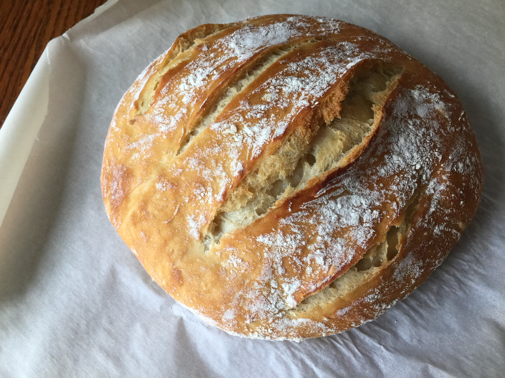

Bread
Home

The traditional French boule, from the French for “ball,” is a porous, soft, hearty and tough-crusted bread served best with a good layer of butter or your favorite soup. Best of all, it takes no time at all to make and it’s incredibly simple.
Ingredients
- 1 1/2 cups warm water
- 1 tablespoon active dry yeast
- 3 cups all purpose flour
- 1 tablespoon salt
- cornmeal
Directions
- The next step is actually making the bread. You’ll want to proof the yeast (meaning you need to wait for bubbles to form) in a mixture of warm water and sugar. This will take five to ten minutes. While you wait, mix the flour and salt together in a large bowl. When the yeast has formed teeming with bubbles on the surface, pour the entire mixture into the bowl with the dry ingredients. Mix thoroughly either with a large wooden spoon or an electric dough hook until the dough is soft, sticky, and uniform. Don’t add more flour.
- Do not remove the dough from the bowl; this recipe requires no kneading. Simply cover the bowl with a dish towel and let rise for two hours in a warm place.
- When the dough has doubled in bulk, turn it out of the bowl onto a lightly floured surface. Divide it in two without kneading, and make sure not to punch it down. Shape the dough into round loaves and dust the tops lightly with flour.
- Next, score the loaves (shallow slices) with a sharp knife the cuts should be a good quarter to a half inch in depth and let rise on the floured surface or cornmeal-dusted baking sheet for ten to fifteen minutes. Preheat the oven to 450 degrees F while you wait.
- When the dough has completed its final rise, place it onto a cornmeal-dusted baking sheet and bake for 40 minutes or until the surface is a dark, golden brown. I personally like to cook my bread for an extra five or ten minutes and glaze with an egg and water mixture to ensure a darker, crispier crust.
- When the bread is ready (you can tell by quickly turning it over and tapping on the bottom with a knuckle– a hollow sound means it is fully cooked), remove the bread from the oven and cool on a rack.
Notes: You can also simplify the recipe even further by mixing and cooking in one round terracotta bread bowl.
Recipe Source